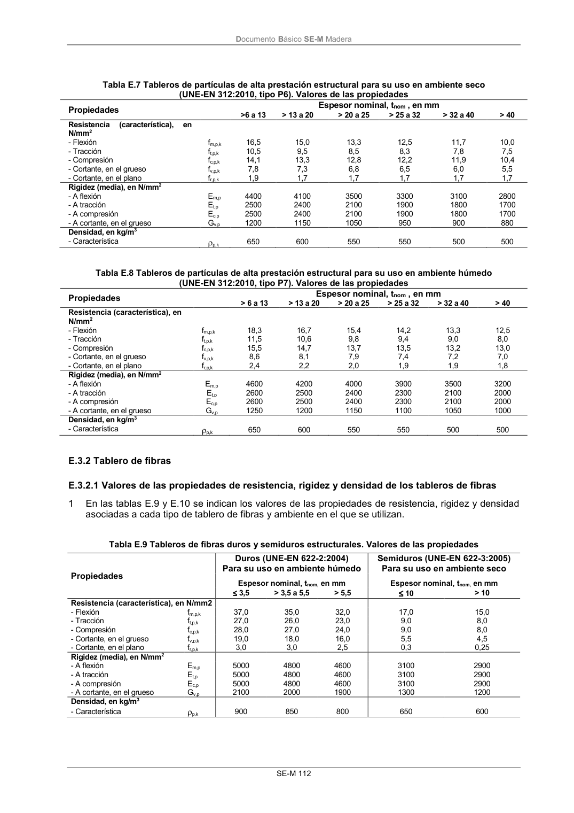

DB-SE-M Madera · edición 2019-12-20 · capa oficial
Documento DB-SE-M-oficial · SHA-256 del PDF 26b5819839ebfda78b0b119c5e76a0a37773b0d763c05688541870075df93718
Página física 118 de 132.
Copia fiel del PDF fuente · Fuente oficial
Ficha de la disposición en la fuente oficial
Formato: Texto de la página (Markdown)
Documento Básico SE-M Madera SE-M 112 Tabla E.7 Tableros de partículas de alta prestación estructural para su uso en ambiente seco (UNE-EN 312:2010, tipo P6). Valores de las propiedades Propiedades Espesor nominal, tnom , en mm >6 a 13 > 13 a 20 > 20 a 25 > 25 a 32 > 32 a 40 > 40 Resistencia (característica), en N/mm2 - Flexión fm,p,k 16,5 15,0 13,3 12,5 11,7 10,0 - Tracción ft,p,k 10,5 9,5 8,5 8,3 7,8 7,5 - Compresión fc,p,k 14,1 13,3 12,8 12,2 11,9 10,4 - Cortante, en el grueso fv,p,k 7,8 7,3 6,8 6,5 6,0 5,5 - Cortante, en el plano fr,p,k 1,9 1,7 1,7 1,7 1,7 1,7 Rigidez (media), en N/mm2 - A flexión Em,p 4400 4100 3500 3300 3100 2800 - A tracción Et,p 2500 2400 2100 1900 1800 1700 - A compresión Ec,p 2500 2400 2100 1900 1800 1700 - A cortante, en el grueso Gv,p 1200 1150 1050 950 900 880 Densidad, en kg/m3 - Característica p,k 650 600 550 550 500 500 Tabla E.8 Tableros de partículas de alta prestación estructural para su uso en ambiente húmedo (UNE-EN 312:2010, tipo P7). Valores de las propiedades Propiedades Espesor nominal, tnom , en mm > 6 a 13 > 13 a 20 > 20 a 25 > 25 a 32 > 32 a 40 > 40 Resistencia (característica), en N/mm2 - Flexión fm,p,k 18,3 16,7 15,4 14,2 13,3 12,5 - Tracción ft,p,k 11,5 10,6 9,8 9,4 9,0 8,0 - Compresión fc,p,k 15,5 14,7 13,7 13,5 13,2 13,0 - Cortante, en el grueso fv,p,k 8,6 8,1 7,9 7,4 7,2 7,0 - Cortante, en el plano fr,p,k 2,4 2,2 2,0 1,9 1,9 1,8 Rigidez (media), en N/mm2 - A flexión Em,p 4600 4200 4000 3900 3500 3200 - A tracción Et,p 2600 2500 2400 2300 2100 2000 - A compresión Ec,p 2600 2500 2400 2300 2100 2000 - A cortante, en el grueso Gv,p 1250 1200 1150 1100 1050 1000 Densidad, en kg/m3 - Característica p,k 650 600 550 550 500 500 E.3.2 Tablero de fibras E.3.2.1 Valores de las propiedades de resistencia, rigidez y densidad de los tableros de fibras 1 En las tablas E.9 y E.10 se indican los valores de las propiedades de resistencia, rigidez y densidad asociadas a cada tipo de tablero de fibras y ambiente en el que se utilizan. Tabla E.9 Tableros de fibras duros y semiduros estructurales. Valores de las propiedades Propiedades Duros (UNE-EN 622-2:2004) Para su uso en ambiente húmedo Semiduros (UNE-EN 622-3:2005) Para su uso en ambiente seco Espesor nominal, tnom, en mm Espesor nominal, tnom, en mm 3,5 > 3,5 a 5,5 > 5,5 10 > 10 Resistencia (característica), en N/mm2 - Flexión fm,p,k 37,0 35,0 32,0 17,0 15,0 - Tracción ft,p,k 27,0 26,0 23,0 9,0 8,0 - Compresión fc,p,k 28,0 27,0 24,0 9,0 8,0 - Cortante, en el grueso fv,p,k 19,0 18,0 16,0 5,5 4,5 - Cortante, en el plano fr,p,k 3,0 3,0 2,5 0,3 0,25 Rigidez (media), en N/mm2 - A flexión Em,p 5000 4800 4600 3100 2900 - A tracción Et,p 5000 4800 4600 3100 2900 - A compresión Ec,p 5000 4800 4600 3100 2900 - A cortante, en el grueso Gv,p 2100 2000 1900 1300 1200 Densidad, en kg/m3 - Característica p,k 900 850 800 650 600

Datos candidatos: compruebe celdas y notas en el PDF.